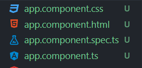

Komponentti koostuu neljästä tiedostosta.
Kaikki alkaa main.ts -tiedostossa. Se on TypeScript-tiedosto, jossa kutsutaan AppModulea. Tiedostossa näkyy myös TypeScriptin import-komentoja, jolla tuodaan käyttöön muualla määriteltyjä funktioita.
AppModule tuodaan TypeScriptin export-komennolla käyttöön projektin muihin osiin app.module.ts -tiedostossa. AppModulelle ei tarvita erillistä import-komentoa.
Se, mitä näkyy projektissa, määritellään app.component.ts -tiedostossa. selector on sama asia kuin html-tägi, ja templateUrl kertoo, missä projektin tiedostossa näkyy sen sisältö.